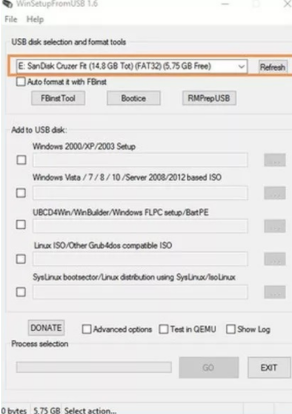

A Incompatibilidade da Instalação do Windows XP via USB e a Sua Solução
A principal causa de falhas ao instalar o Windows XP a partir de um pen drive é a incompatibilidade nativa do sistema com tecnologias modernas. Lançado em 2001 com foco em mídias de CD-ROM, o seu instalador original não possui drivers para ler barramentos USB na primeira fase de boot. Além disso, não reconhece discos rígidos em modo SATA/AHCI nem esquemas de partição GPT/UEFI. Por essas limitações, ferramentas populares como Rufus e Ventoy costumam falhar. Embora consigam carregar a etapa inicial em modo texto, o computador perde a referência da unidade USB ao reiniciar para a segunda fase (modo gráfico). Essa interrupção gera erros de arquivos ausentes ou a tradicional tela azul.
Solução
Para contornar esse problema, utiliza-se o software WinSetupFromUSB em vez do Rufus ou Ventoy. Essa ferramenta faz com que o pen drive simule a estrutura de um disco óptico (CD/DVD), ultrapassando os limites de boot do sistema e permitindo concluir a instalação do Windows XP com sucesso.
Para visualizar todo o processo de criação do pendrive de boot usando o WinSetupFromUSB, assista a um dos tutoriais em vídeo abaixo:
